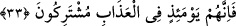
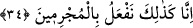
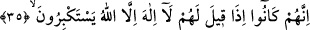
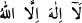
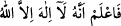
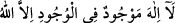
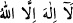

33. Şüphesiz o gün onlar azapta ortaktırlar.
“Şüphesiz o gün onlar” uyanlar ve kendilerine uyulanlar, azgınlıkta ortak olmaları
hasebiyle “azapta ortaktırlar.”
34. İşte biz, suçlulara böyle yaparız.
“İşte biz,” teşrii hikmetin muktezasınca sapanları ve saptıranları azapta cem ederek
“suçlulara” Allah’a ortak koşarak suçta ileri gidenlere “böyle yaparız.”
35. Çünkü onlara: Allah’tan başka tanrı yoktur, denildiği zaman kibirle
direnirlerdi.
“Çünkü onlara:” dâvet ve telkin yoluyla “Allah’tan başka tanrı yoktur, denildiği
zaman kibirle direnirlerdi.”
“
” zikri, Kur’an’da iki yerde vardır. Birisi bu sûrededir. İkincisi ise Kıtâl
(Muhammed) suresi 47/19’daki “
” âyettir. Kur›an da bunun bir üçüncüsü
yoktur. et-Telvih’te der ki: Burada istisna lâ’nın isminin mahallinden bedeldir. (lâ’nın
isminin mahalli merfudur) haber mahzuftur. İfadenin aslı “
” olup
anlamı ‘varlık aleminde Allah’tan başka mevcut hiçbir ilah yoktur’ şeklindedir.
el-Hindî der ki: “Burada müstesna istisna olmak üzere mensuptur. “
” gibi
yerlerde bu istisna zayıf olur. Çünkü bu durum mümteni olan bir şeyi akla getirmektedir
ki o da burada müstesnânın lâ’nın isminin mahallinden değil de lafzından bedel
yapılmasıdır.” el-Isâm der ki: “Burada müstesnâyı lâ’nın isminin lafzından bedel
yapmak, mânâ açısından küfür ve inkarı akla getirmektedir.” Yani bu terkibe göre
“hiçbir ilah olmadığına göre hâşâ Allah da yok” gibi fâsit bozuk, bâtıl, mümteni, muhâl
bir düşünce ve sakıncalı bir durum ortaya çıkar. Bu mânâ ile tevhidi/Allah’ın birliğini
ifade etmek isteyen kimsenin kastı arasında ciddi bir çelişki vardır. Böyle hassas
durumlarda müstesnayı lâ’nın isminin lafzından bedel yapmamak gerekir.